Todays how to is brought to you by the Internet " The Internet, why read a book when you can just look up how it ends"
The LAMP stack is one of the most popular web server configurations. To break it down first we have Linux, which is similar but not UNIX. Linux was created in 1991 by Linus Benedict Torvalds [Listserv]. Developers due the operating system being free often use it. Though the rest of the LAMP stack can be used with Windows/MacOS/Unix. It is really meant to be coupled with Linux. I chose to use Ubuntu 12.04 Linux. I am familiar with this operation system. Though you can certainly use any version of Linux. one word of the wise this tutorial uses the Ubuntu/Debian apt package manager to install the packages for the rest of the lamp stack. Though it will be a similar process to install packages using other types of Linux. There will be some differences. Please look up the package manager for your version of Linux
the second layer is the Apache web server. Created in 1995 by some Computer Scientist[apache_about]. It has become one of the most popular webservers on the web. For our purposes we are going to use the out of the box experience. With no change to any configuration files.
A the third layer is our language layer PHP. Love it or hate it PHP is one of the most popular languages of the World Wide Web.
the website php.net says this about the history of PHP :
"PHP has come a long way since its birth in the mid-1990's. From humble beginnings to becoming one of the most prominent languages powering the web, the evolution of PHP is a geek's fairy tale." [php.net]We will be writing a simple PhP program that will query our database full of fake data and display it to the screen.
our last and final layer is MySQL the database. This is where all the information that our website will display.
So thats the LAMP stack Linux, Apache, MySQL, PhP
Our goal today is to create a Linux server, install apache, mysql and php. Build a small php program to make it all works.
-
Installing the operation system. You best bet is to use a VM or another computer. To install the Ubuntu server. Since Ubuntu Server is done entirely from a terminal and no graphical interface it can be tough to follow along with a website. Though you certainly use a tablet or your phone. You could even print this out this tutorial.
I don’t believe in reinventing the wheel, unless you can well make it better. So on install Linux onto a computer physical or virtual I will leave it up to the experts at ubuntu your best bet it to follow the directions to create a ubuntu your brst bet it to follow the directions to create a bootable Live-CD and then install it using Virtual Box
Once you have Linux in your preferred form up and running you should a see a screen like this.

You will select "Install Ubuntu Server" remember no mice just keyboard.
Use the following screen shots as guilds following along with the commands or highlighted options.
choose Language
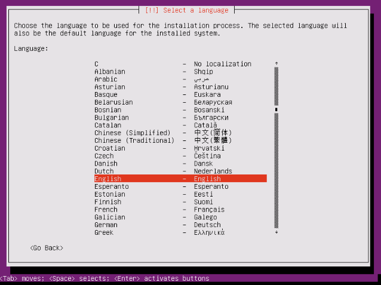choose Location
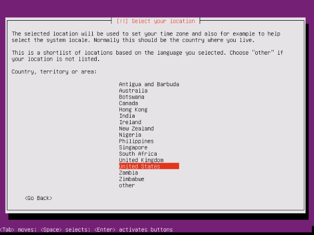configure keyboard
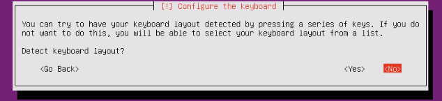
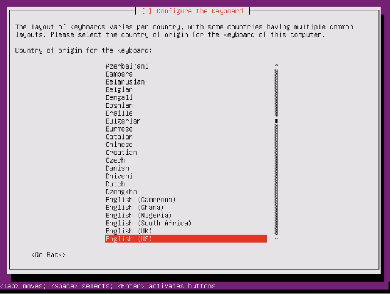
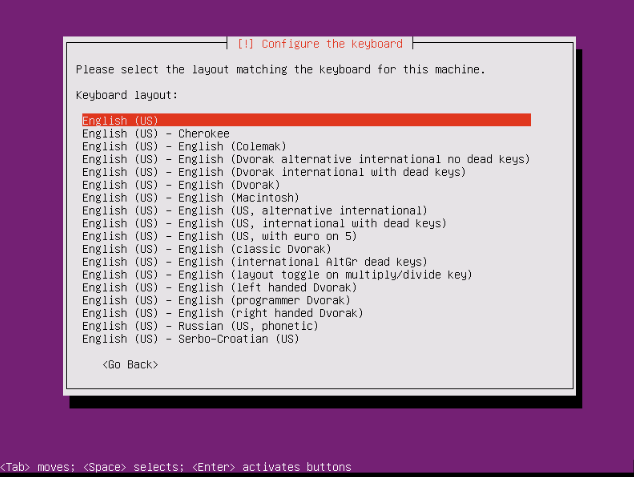
Loading please be patient
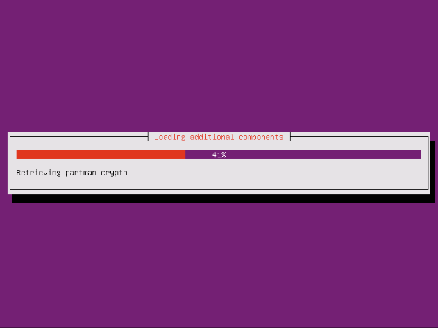choose a hostname or computer name. If you have a admin telling you what to type ask them you really dont want to mess this up. If at home on your home network and you have never done this before ubuntu will be fine. I'm user DevServer.
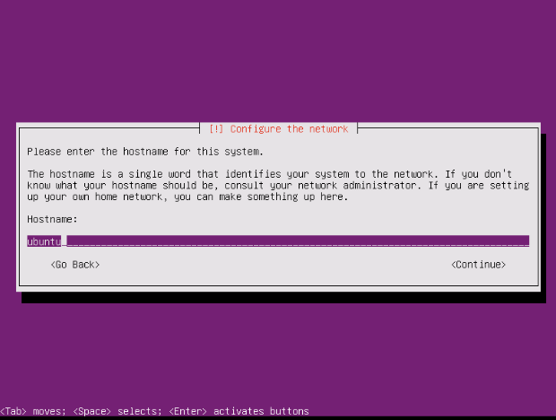name your user and give it a password. This is a development server and will never see the light of production so how strong you make your password is up you.
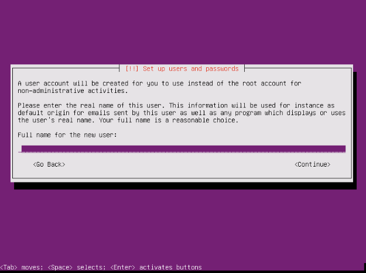 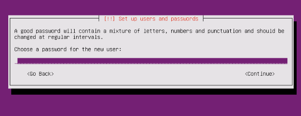as mentioned this is a dev server and you should not need to encrypt your home folder.
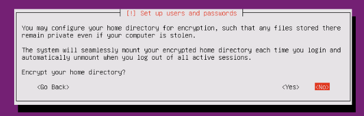partioning is out of scope of this tutorial so were going to use guided and use lvm
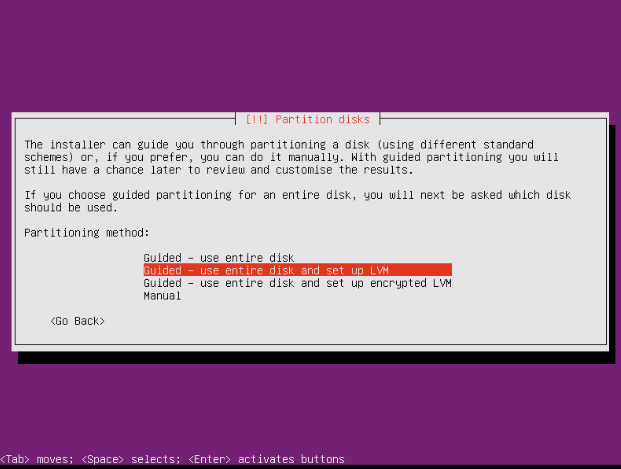we will manually install updates
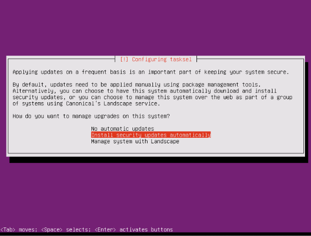we will install our own software press the {tab} key and continue
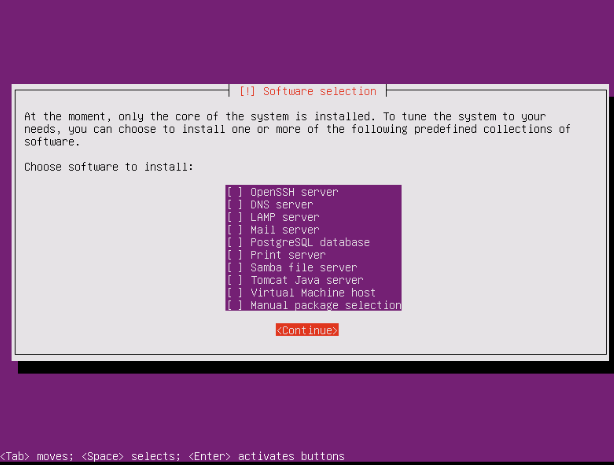heed the warning if you are dual-booting linux along side another OS don't do this. though if this is a VM or different computer go right ahead.
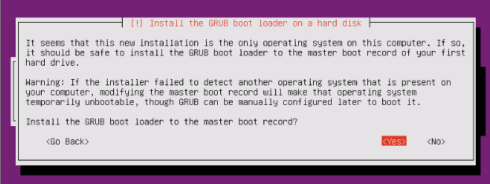finish the install remove the CD
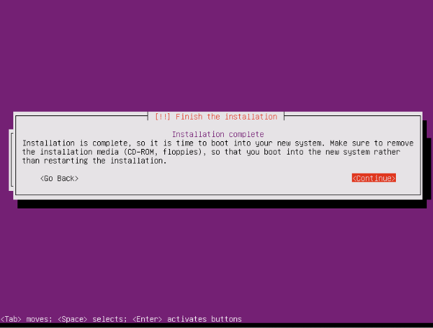 -
we will now install apache :)
upgrade apt-get
update apt-get
install apache
DONE! well that was easy. Go here using a web browser on a different computer
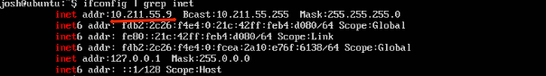
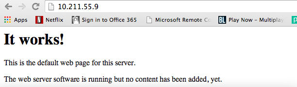 -
now a quick word from our sponsors MySql "... it's My Sql not yours."
we will now install mysql
its a dev server but give it a nice password.
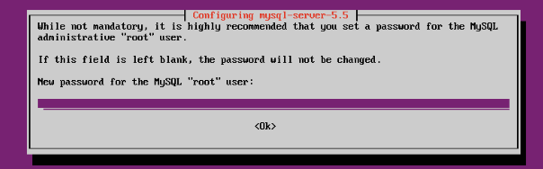create a user table like this
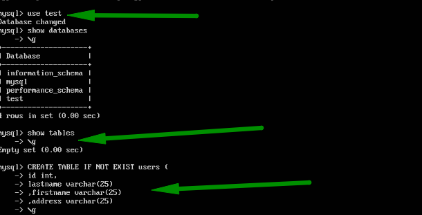dont forget ( )
put some fake data into the database
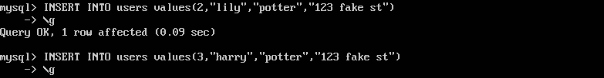now exit
-
lets install php we're almost done
also need the php-mysql module
well php is done
-
ok some quick admin work so we can write to the www folder and create our little app. Follow the commands from the pictures.
add current user to www-data
change owner of /var/www
create index.php
make small app
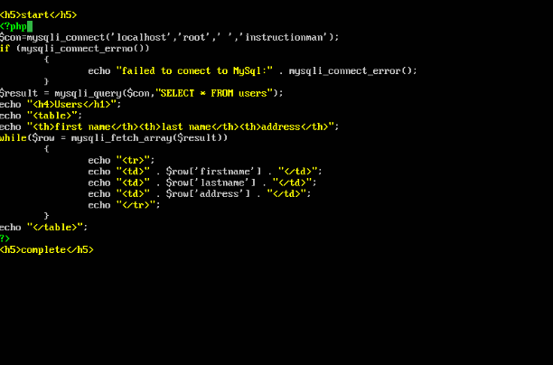see it work
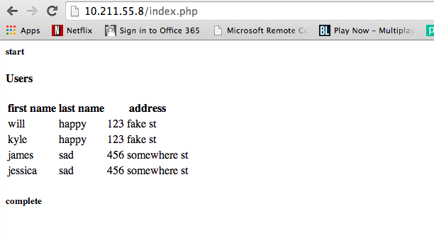